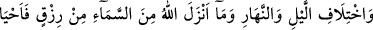
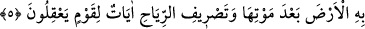

olunca kul artık enfüs mertebesinde müşahede makamına yükselir. Yakîn denen kesin
inancın kemâli ise ancak bu mertebede olur, diğer mertebede olmaz. Çünkü senin sende,
iç aleminde olan şeyleri bilmen, senden hariç olan şeyleri bilmenden daha kuvvetlidir.
Zira bunu hiçbir şey yalanlayamaz. Bundan dolayı ilm-i zarûrî, ilm-i istidlâlîden daha
kuvvetlidir. Diğer canlıların yaratılışının insanın yaratılışına katılması ise cins
mânâsında hepsi ortak olduklarından dolayıdır. Bunu iyi anlamalı ve buna kanâat
etmelidir.
et-Te’vilâtu’n- Necmiyye’de şöyle denilmektedir: Kul zâhirde ve bâtında istîdâd ve
kabiliyetinin güzelliğine iyice bakıp düşündüğünde kendisinin en güzel bir şekilde
yaratılmış olduğunu görür. Yine kadd ü kametinin, boy ve endamının, sûret ve sîretinin
güzelliğini görür. Aklının kemâlini tam bir temyiz kabiliyetine sahip olduğunu, organ ve
beden yapısındaki özellikleri müşâhede eder. Sonra diğer canlıların organ, evsaf ve
tabiatlarını düşününce tüm yaratıklar arasında insanoğlunun sahip olduğu özellik ve
meziyetlere vâkıf olur. Anlayış, akıl, temyiz kabiliyeti ve îmân bakımından cinlerden;
mânevî teklif emânetini yüklenmede ve eşyanın ismini öğrenmede, safa ehline mahsus
olan mükâşefe, müşâhede, muâyene ve her çeşit tecellîde meleklerden üstün olduğunu
görür. Yine insanın yeryüzünde Allah’ın halifesi, mukarreb meleklerin secdegâhı
olduğunu müşâhede eder. Meleklerin kendilerine mahsus menkıbelerini, onların sahip
oldukları münferid faziletleri bilir. Bütün bu bilgi birikimiyle Allah Teâlâ’nın
âdemoğluna çok ikram ettiğine ve insanları yaratıklardan bir çoğuna üstün kılmış
olduğuna kesin inanır. İşte insan karada ve denizde mülk ve melekût inâyetini
yüklenmiştir.
Sâib şöyle demiştir:
“Ey dokuz feleğin sırrı, her şey senin varlığınla zâhirdir,
Deniz ve madenlerden çıkarılan inciler senin eteğinden hâsıldır.
Dört defterin sırrı ve dokuz kitabın mazmûnunu,
Allah senin noktanda gizlemiştir.
Kudsîler Allah’ın emir ve nehiylerinin hükmüyle,
Senin eşiğin önünde baş kesmişlerdir.
Bütün rûhânîler de senin cilve ve tecellîni görmek için
Çocuklar gibi âsumâna koşmuşlardır. ”
5. Gecenin ve gündüzün değişmesinde, Allah’ın gökten indirmiş olduğu rızıkta
(yağmurda) ve ölümünden sonra yeri onunla diriltmesinde, rüzgârları değişik